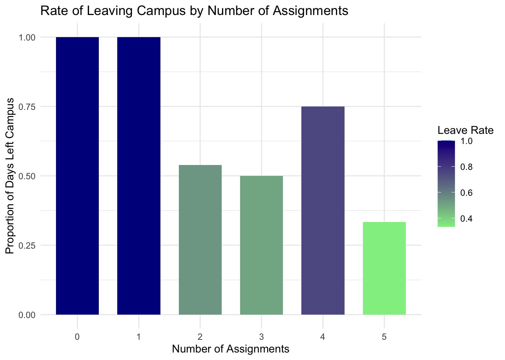
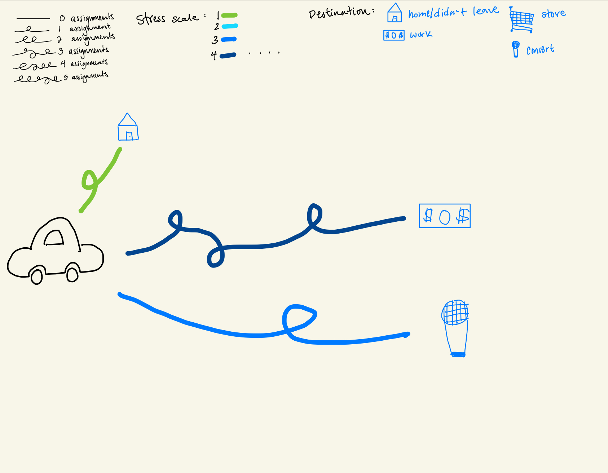
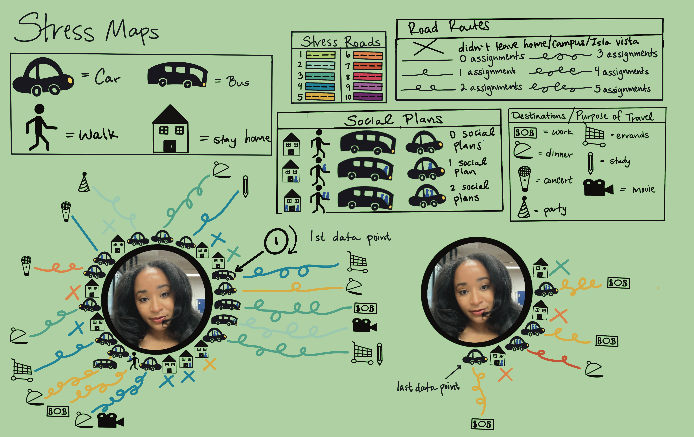
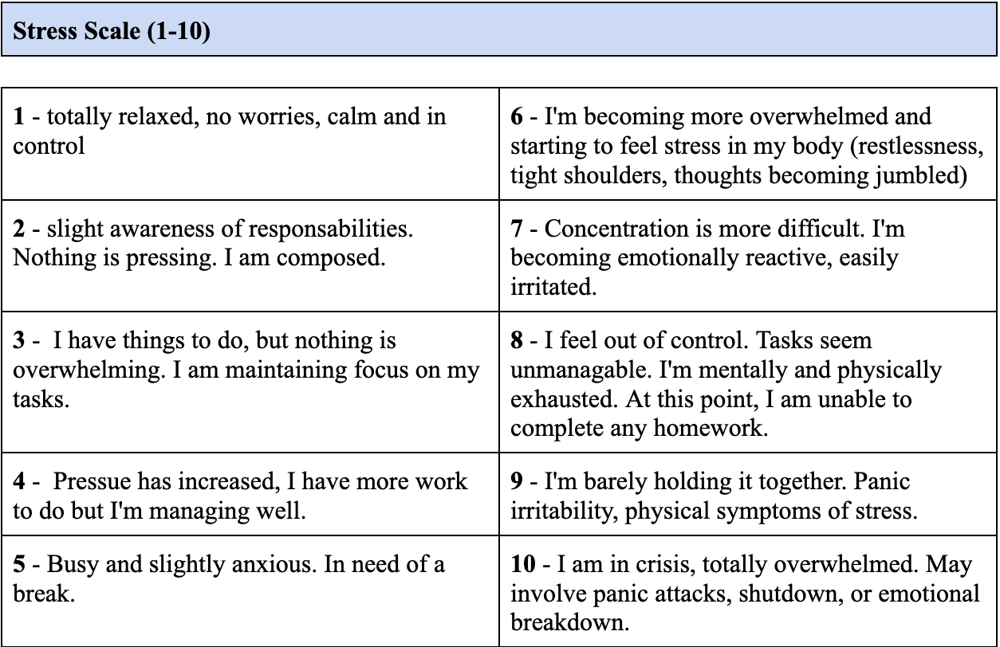

For each number of assignments I have (0-5), I can find the rate at which I leave campus based on how many times I have left campus for a certain number of assignments. This comparison would be informative because I believe that my stress level increases with the number of assignments I have, and I believe that I would be more likely to leave campus on the days that my stress is high.
b.
clean_p_data <- p_data |># new data frameclean_names() |># clean data, easier to work with select(leave_iv_campus_home, x_hw_to_do, stress_level) # only include this data
p_summary <- clean_p_data |># new data framegroup_by(x_hw_to_do) |>#groups data by number of assignmentssummarize( observations =n(), # number of observations for each assignment countdays_left =sum(leave_iv_campus_home =="Yes"), # total times I leftleave_rate =mean(leave_iv_campus_home =="Yes") # proportion of days I left ) ggplot(p_summary, aes(x =factor(x_hw_to_do), y = leave_rate, fill = leave_rate)) +# data frame, set x and y axis, color based on leave_rategeom_col(width =0.7) +# creates bars, makes more space between barsscale_fill_gradient(low ="lightgreen", high ="darkblue") +# choose gradient colorslabs(title ="Rate of Leaving Campus by Number of Assignments",# change titlex ="Number of Assignments", # change name of x axisy ="Proportion of Days Left Campus", # change name of y axisfill ="Leave Rate"# show that columns are colored based on leave rate ) +theme_minimal() # change theme

c.
Data from a personal project exploring the question: “Do I tend to leave school/Isla Vista/home more often when I feel stressed?” Each bar represents the number of days I left campus, grouped by how many assignments I had that day (0-5) . Bar colors indicate the proportion of days I left campus for each assignment count — darker shades reflect higher leave rates.
d.
p_summary |># data frameselect (x_hw_to_do, days_left, leave_rate) |># keep only this dataflextable() |># activate flextableset_header_labels( # change header namesx_hw_to_do ="Homework To Do", # change header to "Homework To Do"days_left ="Days I Left Campus", # change title to "Days I Left Campus"leave_rate ="Leave Rate"# change title to "Leave Rate" ) |>theme_vanilla() # change theme
Homework To Do
Days I Left Campus
Leave Rate
0
1
1.0000000
1
2
1.0000000
2
7
0.5384615
3
2
0.5000000
4
6
0.7500000
5
1
0.3333333
Problem 2
a.
I plan to represent my data as a metaphorical road map that starts at myself and branches toward various destinations. Each road represents a day and branches off toward a destination, while the days I stay home will be represented by a home icon. I will color each road to represent my stress level. The windiness of each road will reflect the number of assignments I had (the more assignments, the more winding the road is). At the end of each road, I’ll place icons representing where I went (store, restaurant, work) to give a visual sense of my destination.
b.
 Affective Visualization Sketch
c.

Affective Visualization Draft

Stress Scale
d.
My data visualization maps my physical movement in relation to stress levels, social plans, assignments, and modes of travel. I was inspired by the road map style of The Game of Life, and used Procreate to create symbolic representations instead of words to focus on visual storytelling.
Problem 3
a.
A logistic regression was used in this study. The response variable is willingness to pay for tree planting and maintenance. The predictor variables are age, gender, faculty, university, climate change awareness, and education level.
b.
This table very clearly represents the data underlying tests considering that the willingness to pay, predictors, partial regression coefficients, standard error, Wald statistic, p-value, and the odds ratio are all boldly labeled and organized in rows.
c.
The authors handled visual clutter quite well by including bold text to separate each row of data. The abundance of numbers if overwhelming at first glance but becomes more manageable considering that the data is separated into three columns based on willingness to pay. This separation is indicated by two horizontal lines which helps to make the data more appealing.
d.
To improve the table, I would create separate headings for each scenario to clearly distinguish the three sets of data. This would make the information easier to read and interpret by breaking it into more manageable sections. I also believe that color-coding each section would help visually separate the three data sets to make the table to interpret. Without color-coding it seems like one large continuous piece of data, so I think adding color would help highlight the difference between each scenario.